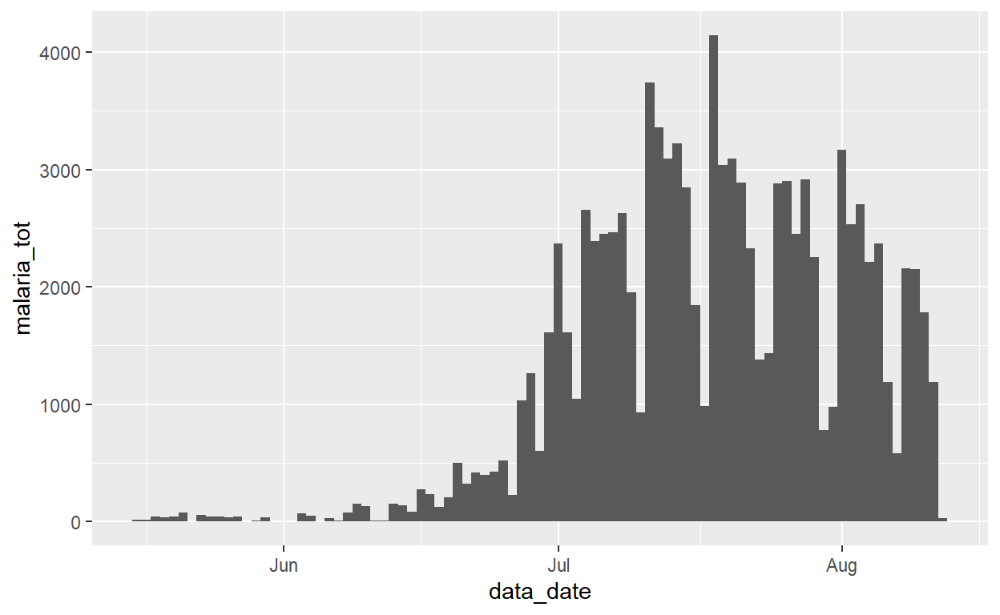
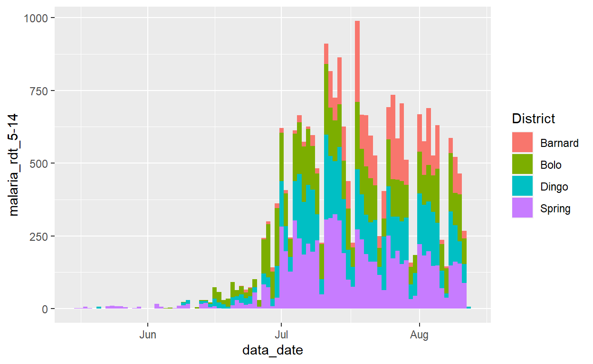
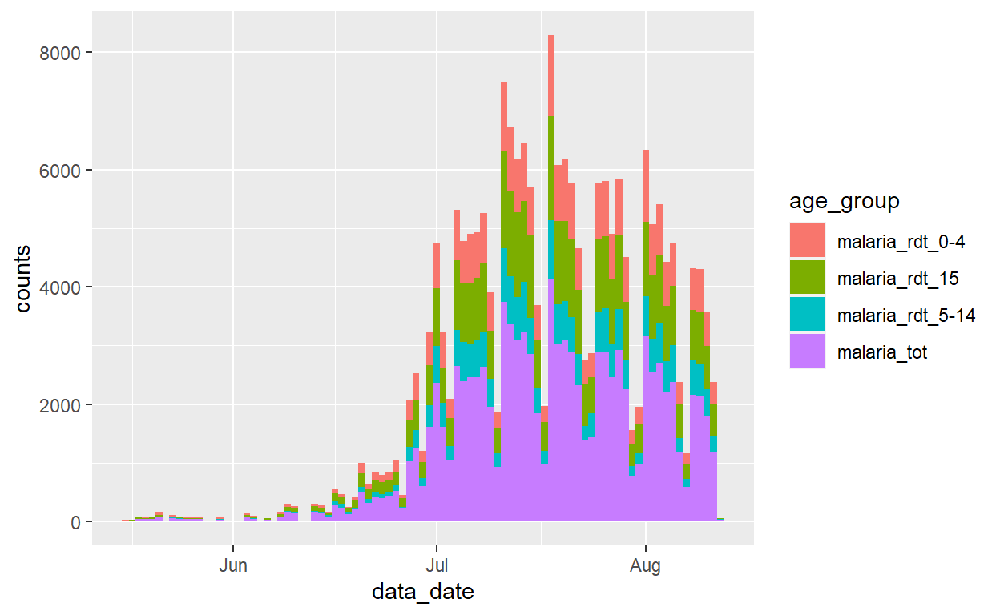
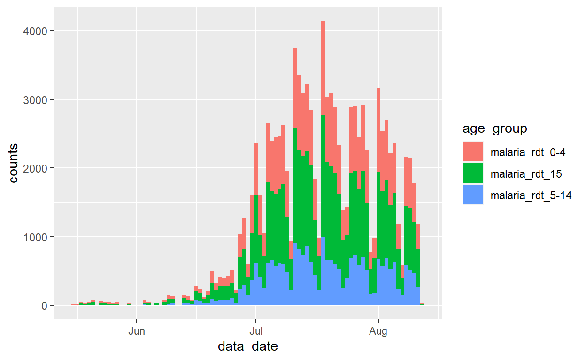

| ID: | Password: | ||||
|
|
|||||
Introduction to R for Applied Epidemiology and Public Health
Tidy data

Welcome
Welcome to the course “Introduction to R for applied epidemiologists”, offered for free by Applied Epi - a non-profit organisation that offers open-source tools, training, and support to frontline public health practitioners.
This interactive tutorial focuses on tidy data in applied epidemiology, in data collection and cleaning. It aims to get you to think about how best to collect and input data for easy analysis in R, as well as teach you best practices.
Target Audience
This course is designed with the following objectives: TO DO
Other languages
This course is available in English.
Offline / Online
You can access this tutorial offline by downloading our R package … TO DO
Learning goals
In this tutorial you will learn and practice:
- Different data types and how to collect and record them
- What format is easiest for analysis in R
- How to name files, columns and values appropriately
- What is a data dictionary and why is it useful
This tutorial adapts parts of the Transition to R and Data cleaning and core functions section of our free Epidemiologist R Handbook, which is available for use offline as well.
Data consent
We continually improve these tutorials by collecting your entries and submitted answers to the quiz questions. By continuing, you consent to this collection and use.
To continue anonymously… do XYZ. TO DO
Who made this course
This course is designed by epidemiologists with decades of ground-level experience in outbreak response and local public health work.

Example datasets
In this tutorial we will use the following datasets. Please take a few minutes to review the structure and content of each dataset before continuing.
Use the arrows on the right to scroll through hidden columns. Note that these are “raw” (messy) datasets that mimic problems commonly found in real-life epidemiological datasets.
A “linelist” of cases in a fictional (not real) Ebola outbreak
A “linelist” is a term used in applied epidemiology to refer to a table that contains key information about each case or suspect case in an outbreak. Each row represents one case, and the columns contain variables such as age, sex, date of symptom onset, outcomes, etc.
This dataset contains 6611 rows and 28 columns. Below are the first 5 rows:
Click to download the raw dataset for your own practice.
Click to download the clean dataset as an .rds file for your own practice. A .rds file is an R-specific file type that preserves column classes. This ensures you will have only minimal cleaning to do after importing the data into R.
Routine surveillance: Aggregated data from malaria surveillance in a fictional country
Aggregated data in epidemiology usually means a table of counts for each facility, or district, etc. Sometimes, the counts can also be per day, week, or month.
In this fictional dataset, each facility reported daily case counts of rapid-test (RDT)-confirmed malaria. Thus, each row represents the number of cases for a specific facility on a specific day.
This dataset contains 3038 rows and 10 columns. Below are the first 5 rows:
Click to download the clean malaria counts dataset as an .rds file for your own practice. A .rds file is an R-specific file type that preserves column classes. This ensures you will have only minimal cleaning to do after importing the data into R.
Hand-collected data in Excel
Here we provide 2 Excel datasets which we hand-collected. TO DO (Neale to send) These datasets contain …. TO DO
The first dataset contains xx rows and xx columns. Below are the first 5 rows:
The first dataset contains xx rows and xx columns. Below are the first 5 rows:
Click to download …. TO DO
Principles of tidy data
Use machine-readable “tidy” data instead of messy “human-readable” data. These are the three main requirements for “tidy” data, as explained in this tutorial on “tidy” data in R:
- Each variable must have its own column
- Each observation must have its own row
- Each value must have its own cell
Why is it important to make sure your data is tidy?
- In making sure the data you collect or analyse is tidy, you follow a consistent data structure. This consistency will make it easier to learn and apply tools to different datasets. It will also make your analyses more efficient.
- When working with R, placing variables in columns allows for easy manipulation of data that feels natural. Most of the packages from the tidyverse are designed to work with tidy data.
Exercise 1
Here is a subset of the malaria routine surveillance dataset, presented in 3 ways.
table1table2table3Answer
Only table2 is tidy as it is the only one where each column is a variable and each cell has its own value.
Tidy data
An example of “tidy” data would be the case linelist used throughout this handbook - each variable is contained within one column, each observation (one case) has it’s own row, and every value is in just one cell. Below you can view the first 50 rows of the linelist:
Exercise 2
Here is a subset of the linelist presented in 3 ways.
(TO DO: One table as is, one table with fever melted in a column with other symptoms, one where fever is input as a binary (0,1) variable)
For each case generation, compute the number of patients with fever. To do so, you will need to:
- Make sure the values recorded are clean.
- Make sure that the data is in a “machine-readable” format.
- Extract the cases for each generation.
- Compute the sum of cases with fever in each of these group.
- Store back in the appropriate place.
linelistunique(linelist$fever)
linelist$fever <- ifelse(is.na(linelist$fever),"no",linelist$fever)
unique(linelist$fever)
linelist$fever <- ifelse(linelist$fever=="yes",1,0)
unique(linelist$fever)
linelist %>%
group_by(generation) %>%
summarise(n_fever=sum(fever))Which of these data representations is the easiest to work with? Why?
Answer
Dataset x (TO DO) is easiest to work with in R because:
- Each variable has its own column
- Variable values are recorded as numerical binary values (i.e. 0 and 1), which can be understood by computers. Note: whilst we can also easily compute summaries with “yes” and “no” values, this requires one extra step when coding as the computer does not understand what these words represent.
Excel-to-R resources
Here are some links to tutorials to help you transition to R from Excel:
R-Excel interaction
R has robust ways to import Excel workbooks, work with the data, export/save Excel files, and work with the nuances of Excel sheets.
It is true that some of the more aesthetic Excel formatting can get lost in translation (e.g. italics, sideways text, etc.). If your work flow requires passing documents back-and-forth between R and Excel while retaining the original Excel formatting, try packages such as openxlsx.
Non-tidy data
The main reason one encounters non-tidy data is because many Excel spreadsheets are designed to prioritize easy reading by humans, not easy reading by machines/software.
To help you see the difference, below are some fictional examples of non-tidy data that prioritize human-readability over machine-readability:
Quiz: representing the data in different formats
Here is the same data, represented in 4 different ways. TO DO Which do you think will be the most useful format to see in Excel? Which do you think will be the most useful format to read in R?
Collecting data
Ways and tips for collecting data
Storing data
Ways and tips for storing data
Data dictionaries
A data dictionary describes what each column header represents. For example, when we look at the linelist dataset, what each of the column names represent may not be clear to someone not familiar with the data.
Answer
Even if you are familiar with the dataset, the meaning of the column names may not be obvious! That’s when data dictionaries become useful, as they will provide information on the column name meaning.
Below is the data dictionary for this dataset:
This data dictionary allows to understand what each column value means, as well as what units the values were recorded in. These help keep dataframes tidy, so that the loaded dataframe can be understood by computers but the epidemiologist still has a clear understanding of what each column represents.
It is good practice to create data dictionaries when you collect data and create new templates. In R, here is a (non-exhaustive) list of some best practices for naming columns:
- Keep column name concise
- Do not use spaces, but rather underscores (
_) - Avoid the use of special characters, such as hyphen (
-), commas (,), percentage signs (%), or currency signs (for example$or£). These will either not be read by R or the column names will then have to be called on using backticks () - Avoid recording unit values in column name unless the unit is shown in multiple units (it might be worth considering creating a new column for the value unit in this case)
- Bold or italics will not be read by R
- Stay consistent in how you name columns (for example, avoid mixing upper- and lower-case and if possible, keep column names all in lower-case)
Add something about package labelled TO DO Add something about package matchmaker TO DO
Pivoting data for analysis
“Wide” and “long” data

Here is a representation of what a “wide” dataset converted to a “long” format would look like.
“Wide” format
Data are often entered and stored in a “wide” format - where a subject’s characteristics or responses are stored in a single row. While this may be useful for presentation, it is not ideal for some types of analysis.
Let us take the malaria_counts dataset as an example. You can see that each row represents a “facility-day”. The actual case counts (the right-most columns) are stored in a “wide” format such that the information for every age group on a given facility-day is stored in a single row.
Each observation in this dataset refers to the malaria counts at one of 65 facilities on a given date, ranging from 2020-05-16 to 2020-08-12. These facilities are located in one Province (North) and four Districts (Spring, Bolo, Dingo, and Barnard). The dataset provides the overall counts of malaria, as well as age-specific counts in each of three age groups - <4 years, 5-14 years, and 15 years and older.
“Wide” data like this are not adhering to “tidy data” standards, because the column headers do not actually represent “variables” - they represent values of a hypothetical “age group” variable.
This format can be useful for presenting the information in a table, or for entering data (e.g. in Excel) from case report forms. However, in the analysis stage, these data typically should be transformed to a “longer” format more aligned with “tidy data” standards. The plotting R package ggplot2 in particular works best when data are in a “long” format.
Answer
Visualising the total malaria counts over time poses no difficulty with the data in it’s current format, as we are plotting one column against another:
ggplot(malaria_counts) +
geom_col(aes(x = data_date, y = malaria_tot), width = 1)
The same principle applies to malaria case counts in children aged 5-14 years, as we are still plotting one column against another. To see which district cases originated from, we can add a colour element by adding the fill argument to the “mapping aesthetics” aes() argument:
ggplot(malaria_counts) +
geom_col(aes(x = data_date, y = `malaria_rdt_5-14`,
fill=District), width = 1)
As the different district names are recorded in the same column, it is easy to add this element to the plot. But what if we wanted to display the relative contributions of each age group to this total count? In this case, we need to ensure that the variable of interest (age group), appears in the dataset in a single column (as is the case for the Districts) that can be passed to ggplot2’s “mapping aesthetics” aes() argument.
pivot_longer()
The tidyr function pivot_longer() makes data “longer”. tidyr is part of the tidyverse of R packages.
It accepts a range of columns to transform (specified to cols =). Therefore, it can operate on only a part of a dataset. This is useful for the malaria data, as we only want to pivot the case count columns.
In this process, you will end up with two “new” columns - one with the categories (the former column names), and one with the corresponding values (e.g. case counts). You can accept the default names for these new columns, or you can specify your own to names_to = and values_to = respectively.
Try to use pivot_longer() to malaria cases across the different age categories and the total count to make the data longer.
df_long <- malaria_countsdf_long <- malaria_counts %>%
pivot_longer(
cols = c(`malaria_rdt_0-4`, `malaria_rdt_5-14`, `malaria_rdt_15`, `malaria_tot`)
)
df_longNotice that the newly created data frame (df_long) has more rows (12,152 vs 3,038); it has become longer. In fact, it is precisely four times as long, because each row in the original dataset now represents four rows in df_long, one for each of the malaria count observations (<4y, 5-14y, 15y+, and total).
In addition to becoming longer, the new dataset has fewer columns (8 vs 10), as the data previously stored in four columns (those beginning with the prefix malaria_) is now stored in two.
Other ways to use pivot_longer()
Since the names of these four columns all begin with the prefix malaria_, we could have made use of the handy “tidyselect” function starts_with() to achieve the same result (see the page (Cleaning data and core functions)[https://www.epirhandbook.com/en/cleaning-data-and-core-functions.html] for more of these helper functions).
# provide column with a tidyselect helper function
malaria_counts %>%
pivot_longer(
cols = starts_with("malaria_")
)We could have also selected the columns by their position:
# provide columns by position
malaria_counts %>%
pivot_longer(
cols = 6:9
)As the columns follow one another, we could have also specified the first and last columns, letting R know that it should include all the columns between these with a colon : (as we did with the column positions above):
# provide range of consecutive columns
malaria_counts %>%
pivot_longer(
cols = `malaria_rdt_0-4`:malaria_tot
)These two new columns are given the default names of name and value, but we can override these defaults to provide more meaningful names, which can help remember what is stored within, using the names_to and values_to arguments. Try to do so yourself. What would be appropriate names for these?
df_long <-
malaria_counts %>%
pivot_longer(
cols = starts_with("malaria_")
)df_long <-
malaria_counts %>%
pivot_longer(
cols = starts_with("malaria_"),
names_to = "age_group",
values_to = "counts"
)
df_longPlotting age groups with the long dataset
We can now pass this new dataset to ggplot2, and map the new column count to the y-axis and new column age_group to the fill = argument (the column internal color). This will display the malaria counts in a stacked bar chart, by age group:
ggplot(data = df_long) +
geom_col(
mapping = aes(x = data_date, y = counts, fill = age_group),
width = 1
)
Examine this new plot, and compare it with the plot we created earlier - what has gone wrong?
We have encountered a common problem when wrangling surveillance data - we have also included the total counts from the malaria_tot column, so the magnitude of each bar in the plot is twice as high as it should be.
We can handle this in a number of ways. We could simply filter these totals from the dataset before we pass it to ggplot():
df_long %>%
filter(age_group != "malaria_tot") %>%
ggplot() +
geom_col(
aes(x = data_date, y = counts, fill = age_group),
width = 1
)
Alternatively, we could have excluded this variable when we ran pivot_longer(), thereby maintaining it in the dataset as a separate variable. See how its values “expand” to fill the new rows.
malaria_counts %>%
pivot_longer(
cols = `malaria_rdt_0-4`:malaria_rdt_15, # does not include the totals column
names_to = "age_group",
values_to = "counts"
)Answer
The tidyselect helper function starts_with() would not have worked here as the columns with the age range specified and the total cases column start with the same string. This is something to think about when inputting data and naming columns!
Pivoting data of multiple classes
The above example works well in situations in which all the columns you want to “pivot longer” are of the same class (character, numeric, logical…).
However, there will be many cases when, as a field epidemiologist, you will be working with data that was prepared by non-specialists and which follow their own non-standard logic - as Hadley Wickham noted (referencing Tolstoy) in his seminal article on Tidy Data principles: “Like families, tidy datasets are all alike but every messy dataset is messy in its own way.”
One particularly common problem you will encounter will be the need to pivot columns that contain different classes of data. This pivot will result in storing these different data types in a single column, which is not a good situation. There are various approaches one can take to separate out the mess this creates, but there is an important step you can take using pivot_longer() to avoid creating such a situation yourself.
Take a situation in which there have been a series of observations at different time steps for each of three items A, B and C. Examples of such items could be individuals (e.g. contacts of an Ebola case being traced each day for 21 days) or remote village health posts being monitored once per year to ensure they are still functional. Let’s use the contact tracing example. Imagine that the data are stored as follows:
TO DO
As can be seen, the data are a bit complicated. Each row stores information about one item, but with the time series running further and further away to the right as time progresses. Moreover, the column classes alternate between date and character values.
One particularly bad example of this encountered by this author involved cholera surveillance data, in which 8 new columns of observations were added each day over the course of 4 years. Simply opening the Excel file in which these data were stored took >10 minutes on my laptop!
In order to work with these data, we need to transform the data frame to long format, but keeping the separation between a date column and a character (status) column, for each observation for each item. If we don’t, we might end up with a mixture of variable types in a single column (a very big “no-no” when it comes to data management and tidy data):
Exercise: merged cells
Problems: In the spreadsheet above, there are merged cells which are not easily digested by R. Which row should be considered the “header” is not clear. TO DO
Photo or GIF of directory structure. TO DO
Exercise: Colour dictionary
A color-based dictionary is to the right side and cell values are represented by colors - which is also not easily interpreted by R (nor by humans with color-blindness!). Furthermore, different pieces of information are combined into one cell (multiple partner organizations working in one area, or the status “TBC” in the same cell as “Partner D”). TO DO
Exercise: Empty rows
Problems: In the spreadsheet above, there are numerous extra empty rows and columns within the dataset - this will cause cleaning headaches in R. TO DO
Exercise: standardising formats/GIS
Furthermore, the GPS coordinates are spread across two rows for a given treatment center. As a side note - the GPS coordinates are in two different formats! TO DO
“Tidy” datasets may not be as readable to a human eye, but they make data cleaning and analysis much easier!
Exercise: functions
The R word “function” might be new, but the concept exists in Excel too as formulas. Formulas in Excel also require precise syntax (e.g. placement of semicolons and parentheses). All you need to do is learn a few new functions and how they work together in R. TO DO
Exercise: Scripts
Instead of clicking buttons and dragging cells you will be writing every step and procedure into a “script”. Excel users may be familiar with “VBA macros” which also employ a scripting approach.
The R script consists of step-by-step instructions. This allows any colleague to read the script and easily see the steps you took. This also helps de-bug errors or inaccurate calculations. See the R basics section on scripts for examples.
Here is an example of an R script:
Photo or GIF of directory structure. TO DO
Exercise: recording dates
TO DO